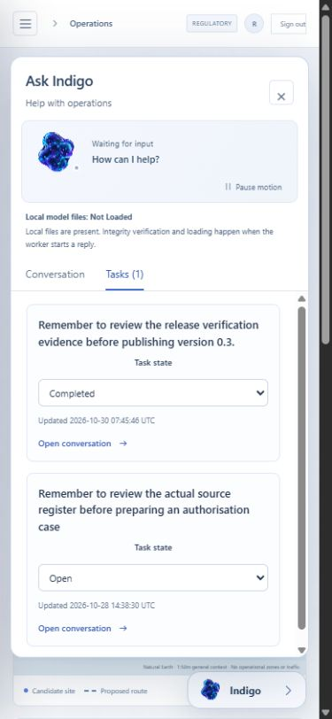

Recorded software evidence
System Lab
Airspace Evaluation
This page makes recorded software and model evidence available for inspection. It does not run a model, connect to an operator workspace or approve a flight.
Current candidate
0.3.1-rc.1 is a published engineering candidate. The exact 12,504,321-byte archive passed a separate clean installation with 479 software tests passed and 20 skipped. All 19 PostgreSQL checks, actual containers, a running worker and backup/restoration checks passed in run 41118769822. The interface suite passed 123 tests. All nine release assets were anonymously retrieved and matched their published digests. These checks do not establish operational acceptance.
Download the 0.3.1-rc.1 ZIP Release notes and verification assets
ZIP SHA-256: 0917f468624e35c64829f1591d389fadf51f4528f027d7dc614f1c3fb2b7b750.


Inspect the exact frozen source and evidence. The screenshot capture requested no new model generation; it is not a training example.
The installed product keeps conversations and personal tasks, previews internal drafts for confirmation, and shows queued work separately from a running reply. Missing models and exhausted budgets remain visible. The operational workspaces work without generation.
The existing System Lab presentation runtime animates the owned companion, with an animated fallback and pause and reduced-motion controls. The application uses the shared in-house agent core through aviation-specific tools and permission gates. Existing presentation assets retain reserved rights. Read about the technology programme.
Recorded application work
The earlier 0.2 application ran a local Qwen controller with retrieval and deterministic tools. Its records identify model inputs, source passages, tool results and the review checkpoint. They are historical software tests, not flown missions or evidence that a language model can approve an operation.
- Read the recorded UI and worker workflow
- Read the small controller comparison
- Read the container and database verification
The two-query comparison does not establish legal-answer quality or a speed advantage. Its timings are affected by run order and cache reuse.
Experimental student
The unchanged student predicts literal English shall language. It achieved 81.82% agreement with 77 unreviewed machine labels; a deterministic literal-word check achieved 100%. It remains experimental and unpromoted.
Read the model card and actual model artifact
Inspect the actual source annotation dataset
The dataset contains 288 legal passages, 42 quarantined annotations and 246 accepted machine annotations. These labels are not qualified human review.
Use the application
The operational product is installed separately with authentication, a database and workers. It starts with an empty operational workspace. The local model requires explicitly installed files. The 9,833-passage EASA corpus is a partial, dated collection, not complete current European law. Luxembourg and Italy require qualified reconciliation; other country entries are not validated packs, and UK applicability stays separate. Permissions, data rights, approved procedures and operator acceptance remain necessary.